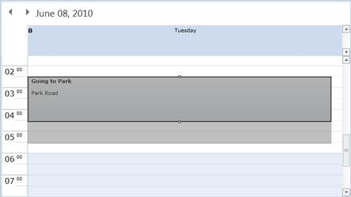

The ability to resize appointments in Essential Schedule enables you to extend the time slot of an appointment by dragging its top or bottom sizing handle. The start time and end time of an appointment will change respective to this resizing.
· To enable all appointments to be resized, set the AllowResize property in the Schedule class to true.
· To enable resizing for a particular appointment, set the AllowResize property in the ScheduleAppointment class to true.

Figure 20: Resizing an Appointment